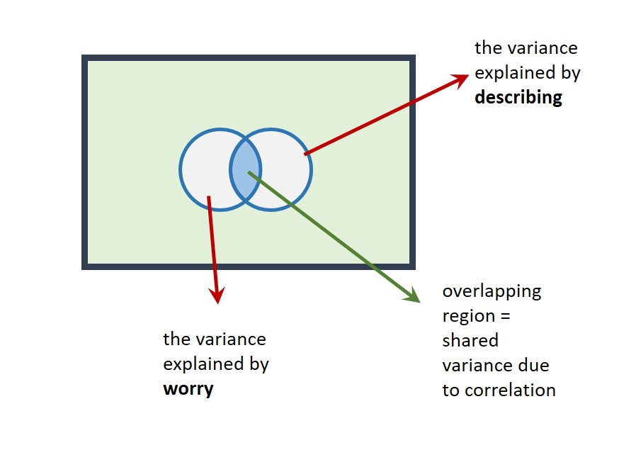

Adding predictor variables to the model
An issue that can arise when adding variables to a model is that predictors are usually correlated to some extent. This can make interpretation of multiple regressions tricky. For example, a predictor that is statistically significant in a simple regression may become non-significant in a multiple regression. Let’s see a demonstration of this!
We’ll now add project to the model with entrex. First, check the correlation between predictors:
ExamData %>%
select(entrex,project) %>%
cor()
> entrex project
> entrex 1.0000000 0.2908253
> project 0.2908253 1.0000000The correlation between entrex and project is r =
Our predictor variables are weakly correlated. We should keep this in mind going forward.
Now run a multiple regression to predict finalex from both entrex and project. Again, use lm but use the + symbol to add predictors to the model:
m3 <- lm(finalex ~ entrex + project, data = ExamData)
summary(m3)
>
> Call:
> lm(formula = finalex ~ entrex + project, data = ExamData)
>
> Residuals:
> Min 1Q Median 3Q Max
> -41.880 -16.617 4.636 15.562 35.273
>
> Coefficients:
> Estimate Std. Error t value Pr(>|t|)
> (Intercept) -84.8289 33.6846 -2.518 0.0174 *
> entrex 2.8894 0.5406 5.344 8.81e-06 ***
> project 0.7515 0.4457 1.686 0.1021
> ---
> Signif. codes: 0 '***' 0.001 '**' 0.01 '*' 0.05 '.' 0.1 ' ' 1
>
> Residual standard error: 22.06 on 30 degrees of freedom
> Multiple R-squared: 0.5716, Adjusted R-squared: 0.5431
> F-statistic: 20.02 on 2 and 30 DF, p-value: 3e-06In this model with entrex and projectas predictors:
What is the value of \(R^2\) (as a percentage): %
By how much has \(R^2\) increased in this model, relative to the model with entrex alone (where \(R^2\) was 53.10%)? (as a percentage) (you will need to calculate this) %
Is the overall regression model predicting finalex on the basis of entrex and project statistically significant?
Is
entrexa statistically significant predictor offinalex?We can report this in the following way: the t-test on the coefficient for
entrexis statistically significant, b = 2.89, t(30) = 5.34, p < .001.Is
projecta statistically significant predictor offinalexin this model?What is the value of the coefficient for
project? b =Report the t-statistic in APA style:
Project mark was not a statistically significant predictor of final examination in this model, b = 0.75, t(30) = 1.69, p = .10
Looking across the analyses we’ve performed, we can see that project is a (weak) but statistically significant predictor of finalex in a simple regression. However, when it is included in a model that also includes entrex it is not a significant predictor! What’s going on?
The model containing only
projectexplains 16.38% of the variability infinalex.The model containing only
entrexexplains 53.10% of the variability infinalex.However, a model containing both
projectandentrexonly explains 57.16% of the variability infinalex, not 16.38 + 53.10 = 69.48%, as we might expect.
This is because the predictors are correlated (r = .29) and so the variance they explain in finalex is shared.
We could represent this on a Venn diagram as follows:

The correlation is represented as an overlap in the circles. Their total area (57.16%) is therefore less than the area they’d explain if there were no overlap (69.48%) (i.e., if there was no correlation).
This demonstrates an important point: The t-tests on the coefficients in a multiple regression assess the unique contribution of each predictor in the model. That is, they test the variance a predictor explains in an outcome variable, after the variance explained by the other predictors has been taken into account. This is why project is not statistically significant in the multiple regression model – it only explains a small amount of variance once entrex has been taken into account.
It is possible to think of the F-statistic and t-value in multiple regression in terms of the Venn diagram:
The F-statistic compares the explained variance with the unexplained variance. The explained variance is represented by the outline of the two circles in the Venn diagram above. The unexplained variance is the remaining blue area of the rectangle.
The t-value compares the unique variance a predictor explains with the remaining unexplained variance. For example, for
projectin the Venn diagram above, this would be the area in the orange crescent, relative to the remaining blue area in the rectangle.